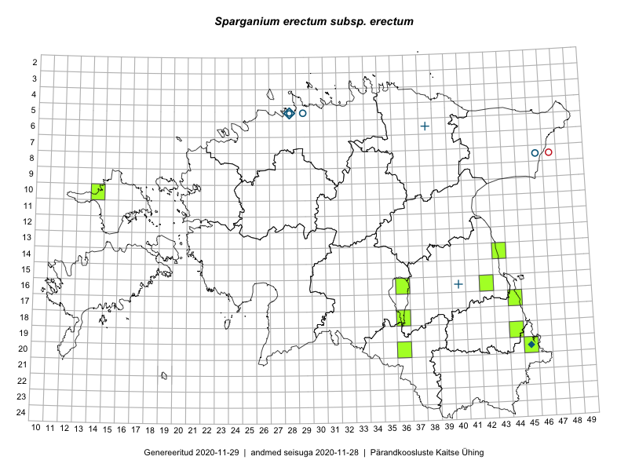

Sparganium erectum subsp. erectum — haruline jõgitakjas (tüüpalamliik)
Typhaceae :: Sparganium erectum subsp. erectum L. (22)

Kaart põhineb 22 kirjel:
herbaareksemplare 22
Taime kaasaegsed ja ajaloolised leiukohad asuvad 14 ruudus.
Tingmärgid ja leidudega ruutude arvud periooditi uues (u) ja 2005 andmestikus (v)
| █ | vahemik | u1 | v2 |
|---|---|---|---|
| █ | 2006–2020 | 9 | – |
| ◆/◇ | 1971–2005 | 2 | 0 |
| ○ | 1921–1970 | 3 | 1 |
| + | kuni 1920 | 2 | 0 |
| × | hävinud | – | 0 |
| ? | kaheldav | – | 0 |
| Ruut | Leidja(d) | Leiuaeg | Kirje |
|---|---|---|---|
| 20-45 | Peedu Saar, Ott Luuk | 2019-09-24 | TAA0149475: Sparganium erectum subsp. erectum L. |
| 20-45 | Ott Luuk, Tiit Hallikma | 2019-07-10 | TAA0151481: Sparganium erectum subsp. erectum L. |
| 20-45 | Ott Luuk, Tiit Hallikma | 2019-07-10 | TAA0151482: Sparganium erectum subsp. erectum L. |
| 10-14 | Ott Luuk, Peedu Saar | 2017-09-14 | TAA0142831: Sparganium erectum subsp. erectum L. |
| 14-43 | Ott Luuk, Peedu Saar | 2017-08-21 | TAA0142803: Sparganium erectum subsp. erectum L. |
| 16-36 | Peedu Saar, Polina Degtjarenko | 2017-08-05 | TAA0141068: Sparganium erectum subsp. erectum L. |
| 17-44 | Peedu Saar | 2016-08-24 | TAA0134031: Sparganium erectum subsp. erectum L. |
| 20-36 | Ott Luuk, Thea Kull | 2016-08-23 | TAA0147294: Sparganium erectum subsp. erectum L. |
| 18-36 | Peedu Saar, Mari Metsoja | 2016-07-20 | TAA0134037: Sparganium erectum subsp. erectum L. |
| 16-42 | Peedu Saar | 2015-08-21 | TAA0116534: Sparganium erectum subsp. erectum L. |
| 19-44 | Kersti Tambets | 2014-07-29 | TAA0112813: Sparganium erectum subsp. erectum L. |
| 05-28 | Tiiu Trei | 2000-07 | TAA0118170: Sparganium erectum subsp. erectum L. |
| 20-45 | Toomas Kukk | 1992-08-14 | TAA0111172: Sparganium erectum subsp. erectum L. |
| 20-45 | Toomas Kukk | 1992-08-14 | TAA0111173: Sparganium erectum subsp. erectum L. |
| 05-29 | E. Peikel | 1968-07-04 | TAM0027895: Sparganium erectum subsp. erectum L. |
| 05-29 | E. Peikel | 1968-07-04 | TAM0027896: Sparganium erectum subsp. erectum L. |
| 05-29 | Õie Jaagomäe | 1963-08-16 | TAM0027893: Sparganium erectum subsp. erectum L. |
| 05-29 | E. Peikel | 1963-08-16 | TAM0027894: Sparganium erectum subsp. erectum L. |
| 08-46 | Vilma Kuusk, T. Piin | 1961-08-15 | TAA0111115: Sparganium erectum subsp. erectum L. |
| 05-28 | G. Vilbaste | 1949-06-07 | TAM0029389: Sparganium erectum subsp. erectum L. |
| 06-38 | R. Lehbert | 1877-07-20 | TAM0058835: Sparganium erectum subsp. erectum L. |
| 16-40 | 1857 | TU364371: Sparganium erectum subsp. erectum L. |
Ruutude arv uue atlase andmekogu järgi. Muuhulgas arvestab vanemat herbaariumi, 2005. aasta atlase välitöölehtedelt uuesti digitaliseeritud andmeid jne. Uue atlase andmekogust pärinevad andmed on kaardile kantud siniste sümbolitega.↩︎
Ruutude arv 2005. aasta atlase (Kukk, T., Kull, T., Eesti taimede levikuatlas. Eesti Maaülikool, Põllumajandus- ja Keskkonnainstituut, Tartu, 2005) järgi. Andmeallikana on kasutatud levik.exe programmi, kus igas ruudus on registreeritud vaid uusim leid. Seetõttu on vanemate perioodide kohta andmed puudulikud. Kasutatud levik.exe andmestikus leidub mõningaid kõrvalekaldeid atlase trükis ilmunud versioonist, sagedamini tarnade ja käpaliste seas. Lisaks leidub selles andmestikus valik liike (peamiselt väheste leidudega tulnuktaimed), mille kaarte trükis ei avaldatud. Vana atlase andmed ruutudest, milles ei ole uue atlase andmekogus leide enne 2006. aastat, on kaardil esitatud punaste sümbolitega. Vana atlase andmetel hävinud ja kaheldavaid leiukohti pole hilisemate (taas)leidude põhjal korrigeeritud.↩︎